Master's thesis
Updated 28 October 2026 · results are preliminary until the thesis is submitted
In real applications, we often want to state a task in natural language, spoken or written. Unlike humans, however, a robot does not natively operate on natural language. This thesis turns an instruction in natural language into goals that the agent can understand and reach with a learned world model.
The setting
Human demonstrations in FrankaKitchen, a simulated kitchen with a Franka arm and seven tasks, shown in real time.
The question
How can an agent use language and the prior knowledge of foundation models to reach a goal it has never encountered?
Step 1 · Decompose
Intuition
The vision-language model does the thinking: it breaks the instruction into subtasks. Hierarchical reinforcement learning often splits a task by time, with a new subgoal every few steps, however hard or easy each stretch is. But every subgoal costs a generated image in step 2, so the split should follow difficulty instead: more subgoals where the task is hard, fewer where it is easy. That takes reasoning about the instruction and the scene together, which vision-language models do well.
In this thesis
The hard part of each task is handling the object, so the model writes two target states per task: the gripper at the object, then the task done. The order comes from the words, and a task the image already shows as done needs no states. Whether one state per task does as well is being tested, and a later test lets the model choose the states itself.
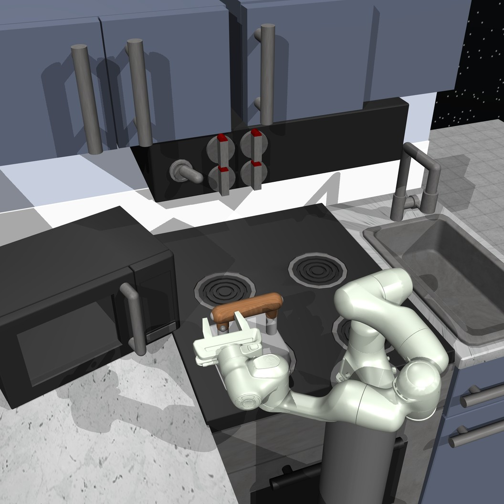
the current image
Open the microwave,
then move the kettle to the top left burner.
Qwen3.5-9Bvision-language model
microwave
kettle
Step 2 · Specify
Intuition
A goal image is a target the robot can compare with what its camera sees, at every step. A generator pretrained on billions of images already knows what “open” or “on” looks like, so it only has to learn what this kitchen looks like.
In this thesis
An adapter trained on this kitchen teaches the generator the scene. Given the current image and one target state, the generator draws the goal image of the same scene. Whether it draws the right outcome, also for unseen scenes and wordings, is being tested.
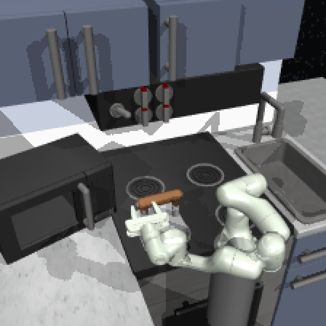
the current image
the microwave's door is open
FLUX.2 [klein] 4B + kitchen adapterdiffusion image-editing model
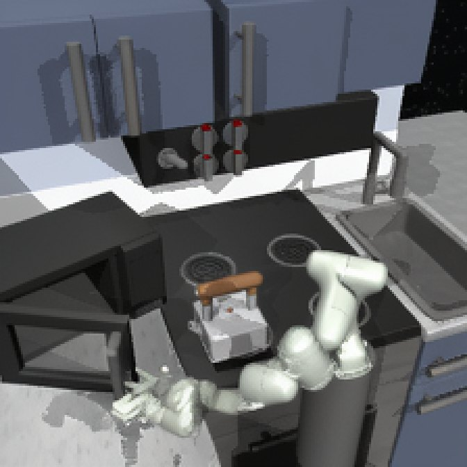
generated goal
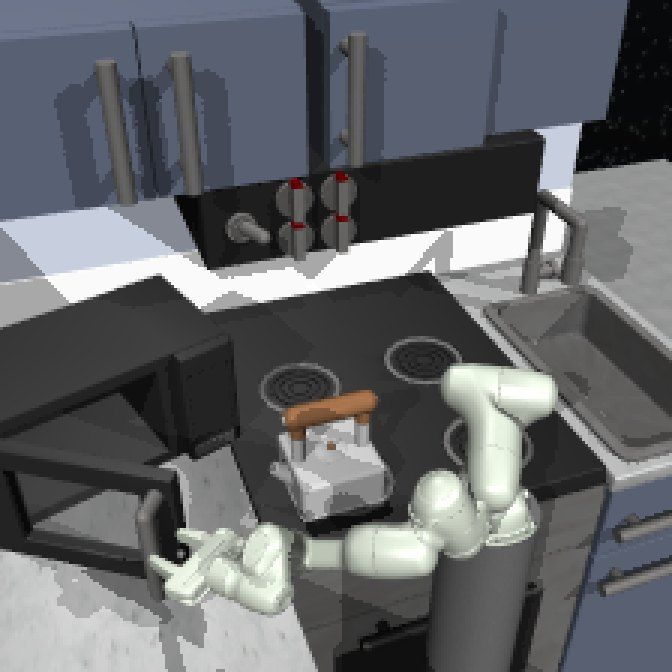
recorded goal, for comparison
Step 3 · Reach
Intuition
A world model predicts how the scene responds to actions, whatever the goal. A planner can search it at run time for the actions that lead to a new goal image, without any training for that goal.
In this thesis
The world model predicts how the scene's DINOv2 features change when the robot acts. The planner tries many plans in it, keeps those that end closest to the goal image and refines them. The robot executes the start of the best plan, then looks again and plans anew.
the current image
the goal image
with the robot's joint values
CEM over DINO-WMplanner
The robot executes the best plan's first 0.4 s, then plans again from the new image.
What went wrong first
DINO-WM scores a plan by the squared distance between its imagined outcome and the goal image, patch by patch, every patch counting the same:
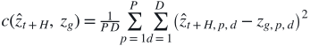
ẑt+H: the imagined end of a plan · zg: the goal image · P = 256 patches of D = 768 features each
In FrankaKitchen, this failed in two ways:
the planner
its goal
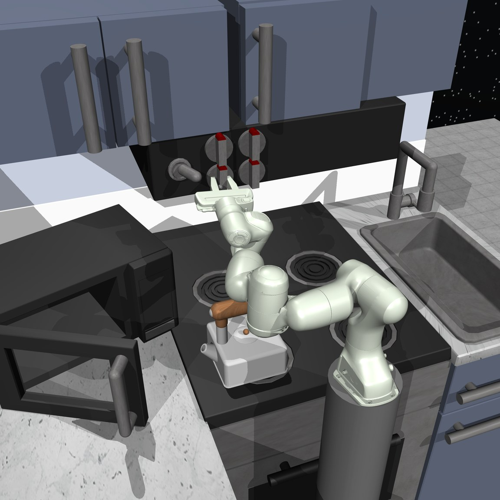
Why
Every patch counts the same, and the arm covers far more of them than a knob, so the arm's pose dominates the distance. A gripper in the wrong place is paid for twice, where it is and where the goal shows it; taking it out of view removes one of the two costs. No better world model could fix either.
This thesis's objective
DINO-WM's patch distance, after a learned mapping m removes the robot from both images, so hiding the gripper gains nothing
the plan's gripper position, from its joints q̂ by forward kinematics, against the goal's, read from the goal image by a learned readout h
the plan's finger opening ŵ against the goal's, read from the goal image by w
With this objective, its terms computed exactly, the planner hid the gripper in 0 of 14 episodes, against 6 of 14 with DINO-WM's distance.
With the new objective
In the demonstrations
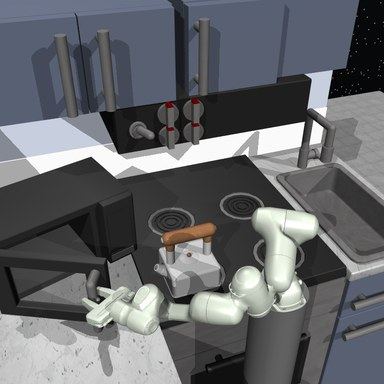
goalOpen the microwavefrom the start every demonstration shares
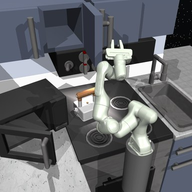
goalOpen the hinge doorfrom where its demonstration began the task
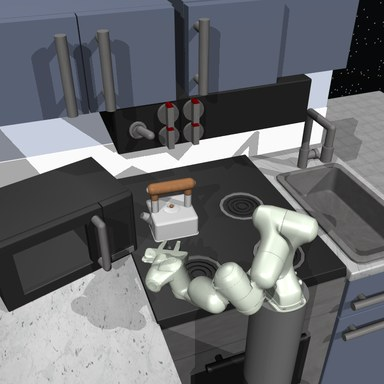
goalKettle to the top-left burnerwhere the demonstrations put it
In no demonstration
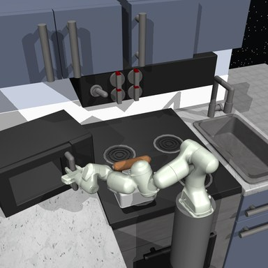
goalClose the microwavefrom just after it was opened
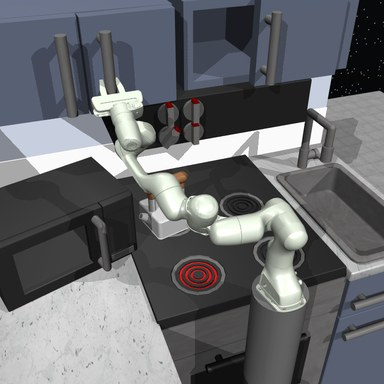
goalClose the hinge doorfrom the arm's home pose
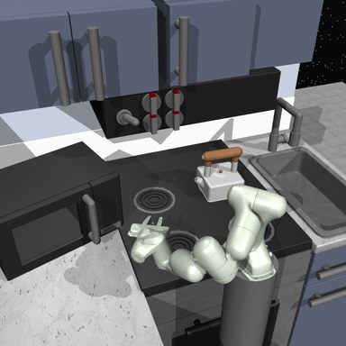
goalKettle to the top-right burnerwhere no demonstration puts it
The central comparison
The policy is an achiever as in LEXA. It learns inside the same world model, with the same goals and objective, and answers in milliseconds; the planner searches for seconds.
All 603 demonstrations do their tasks in one fixed order, the microwave always first; none undoes a task, and none puts the kettle on a right-hand burner. The test goals move further from them in four levels, and the results will appear under Where it stands.
Results
As of 28 October 2026: the main experiments run until 31 October, and every number here is preliminary.